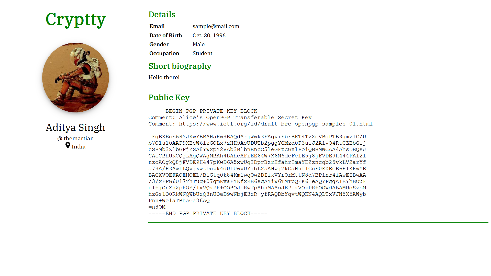

Project
Cryptty
Cryptty is a peer to peer chat application. It used PGP public key to encrypt the messages. Chat application uses API to fetch public key from a centralized server.
Technology and Concept : Computer Network, Python 3, Django, Crytpography
Link : [ Github ]
Endecry : Cryto hash generator and crytpography encoder and decoder

Endecry is a terminal based software which generate crytpographical hash and encode and decode using advance crytpographical cipher. Some of available algorithms are MD2, MD4, SHA1, SHA-256 etc.
Technology and Concept : C++, Crytpography
Link : [ Github ]